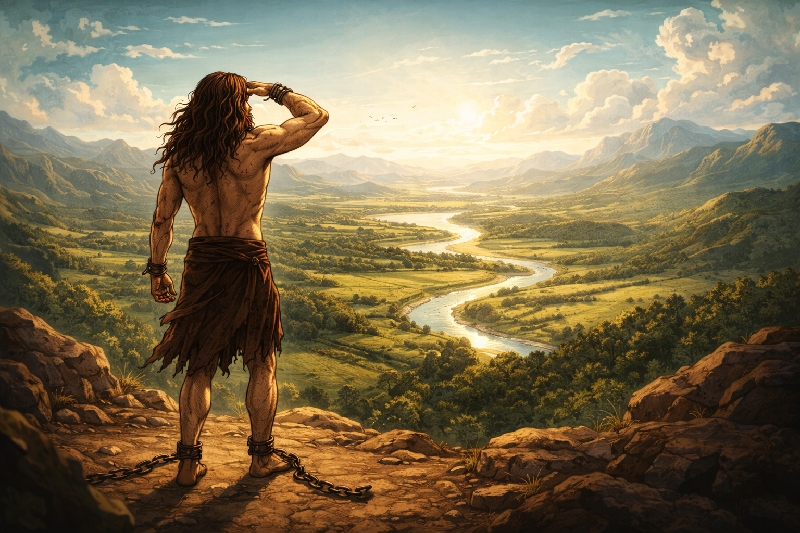

Cuando sales al exterior, la luz te ciego por unos segundo, pero al acostumbrarte te das cuenta del nuevo mundo que has descubierto y piensas en todas las posibilidades que trae consigo este nuevo panorama. Toda esta información te agobia y te hace cuestionar todo el pasado, debes de hacer algo con toda esta información nueva.
Imagen generada a partir de la principal con ChatGPT 5.2 Instant